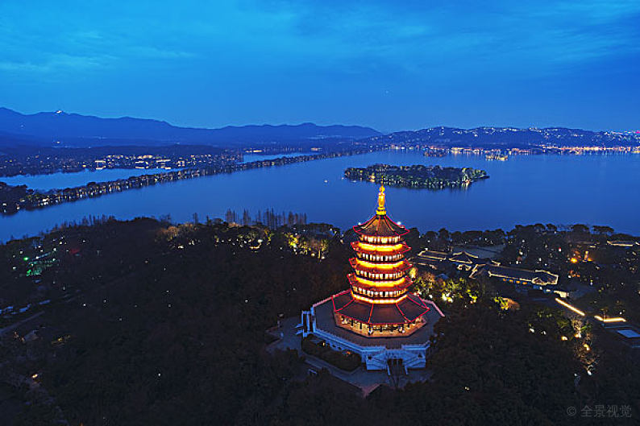
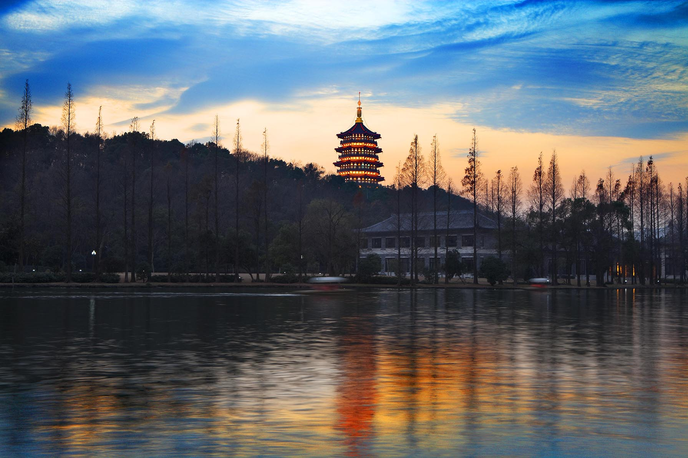
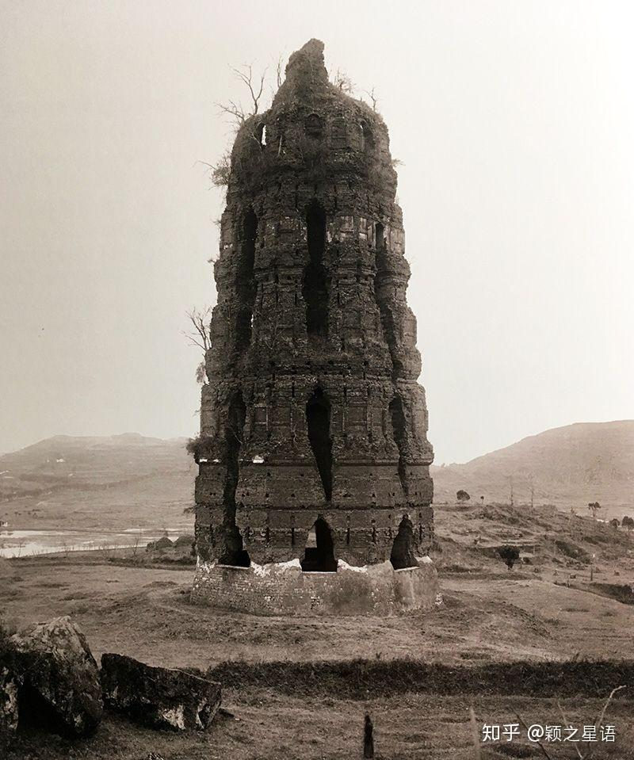
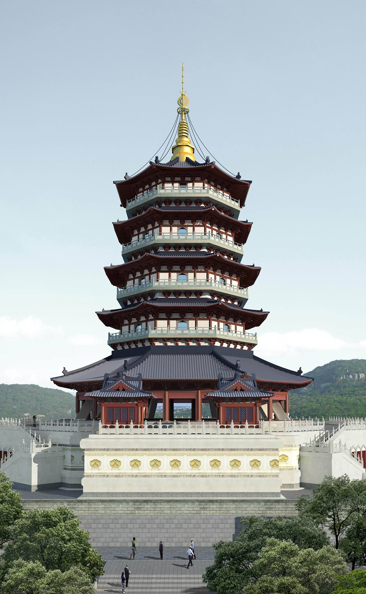

雷峰塔既倒，西湖水未干
雷峰塔雷峰塔之所以远近闻名，与民间传说《白蛇传》有很大的关系。相传，法海和尚曾将白娘子镇压在塔下，并咒语:'若要雷峰塔倒，除非西湖 水干。'
传说发生在宋朝时的杭州、苏州及镇江等地。白素贞是千年修炼的蛇妖，为了报答书生许仙前世的救命之恩，化为人形欲报恩，后遇到青蛇精小 青，两人结伴。白素贞施展法力，巧施妙计与许仙相识，并嫁与他。婚后金山寺和尚法海对许仙讲白素贞乃蛇妖，许仙将信将疑。后来许仙按法海 的办法在端午节让白素贞喝下带有雄黄的酒，白素贞不得不显出原形，却将许仙吓死。白素贞上天庭盗取仙草灵芝将许仙救活。法海将许仙骗至金 山寺并软禁，白素贞同小青一起与法海斗法，水漫金山寺，却因此伤害了其他生灵。白素贞因为触犯天条，在生下孩子后被法海收入钵内，镇压于 雷峰塔下。后白素贞的儿子长大得中状元，到塔前祭母，文曲星驾临感动神灵，法力失效，宝塔坍塌。终于将母亲救出，全家团聚。还有那个可爱 的小青也找到了相公。
《白蛇传》的传说源远流长，家喻户晓，是中国四大民间传说之一，(其余三个为《梁山伯与祝英台》、《孟姜女》、《牛郎织女》)。被列入"第一 批国家级非物质文化遗产"之列。而正是这一凄美的传说，给诗话江南，水墨西湖带来了神秘的色彩，叫来到此地的游人，产生了无尽地幻想和轻幽的叹 息。
1992年，由赵雅芝主演的电视剧《新白娘子传奇》在播出，该版本是观众最为熟悉和追捧的版本，也是最受欢迎的版本。赵雅芝扮演的白娘子 端庄、美丽、善良、贤惠的形象至今无人能超越;陈美琪扮演的小青以及叶童的反串也深入人心，《新白娘子传奇》是现在重播最多、最受观众欢 迎的版本，经久不衰， 在人们心中，赵雅芝的形象就是白娘子的形象。
雷峰塔1. 相公是许仙还是许宣
白娘子与许仙的爱情故事，为雷峰塔平添了许多神秘和伤感。在有关雷峰塔的历史文献和文学作品时，许仙这个传说中的人物在明清小说中，均称之 为"许宣"，直到民国中期，才被"改名"为许仙。
雷峰塔建造之时，尚无白蛇故事。吴越国降宋后，市井乡野的说书艺人就一步步地衍化出这个传奇故事。故事的梗概与现代的传说基本一致，唯独这 许仙被改了名。明代冯梦龙《警世通言》第25卷收录的《白娘子永镇雷峰塔》，是最早较完备地记载白蛇传奇故事的版本之一。书中在介绍男主人公时 说到:"话说宋高宗南渡，绍兴年间，杭州临安府过军桥黑珠巷内，有一个宦家，姓李名仁。见做南廊阁子库募事官，又与邵太尉管钱粮。家中妻子有一 个兄弟许宣，排行小乙。"这位"许宣"在书中又称"小乙官人"，即是如今家喻户晓的许仙。清代古吴墨浪子辑的《雷峰怪迹》一文，文字更为凝练，但 许宣许小乙的称呼依然没有变。
至民国中期，文学作品中的许宣开始成为许仙了。鲁迅先生1924年发表的《论雷峰塔的倒掉》中说:"我的祖母曾经常常对我说，白蛇娘娘就被压在 这塔底下!有个叫做许仙的人救了两条蛇，一青一白，后来白蛇便化作女人来报恩，嫁给许仙了……"建国后，著名京剧表演艺术家张君秋、昆曲表演艺术 家白云生等都将《雷峰塔》、《白蛇与许仙》等剧目作为自己的代表作。电影《白蛇传》更是家喻户晓。从此许仙的大名盖过了"许宣"。不过，许仙之 名确实较许宣有意思。而衍化中产生的这类变化，正是民间文学的一大特征。
2. 酒醉醉酒老和尚
雷峰塔在元末失火后，便已只存塔心。明张岱撰的《西湖梦寻》中说到一则趣闻，大意如下:李长蘅在题画时说，我的朋友曾听子将讲西湖上这两座 塔，"保俶(叔加人旁)塔如美人，雷峰塔如老和尚。"这个比喻我极为欣赏。后来我与朋友观赏荷花时作了一首诗，当中有"雷峰倚天如醉翁"的句子，朋 友见了跳起来说:"子将把雷峰比作老和尚不如您醉翁的比喻更得情态。"
当然，张岱本人也是才高八斗之人，他在《雷峰塔》诗中干脆活龙活现地写道:"闻子状雷峰，老僧挂偏裘，日日看西湖，一生看不足。时有熏风至， 西湖是酒床，醉翁潦倒立，一口吸西江。"拿着雷峰塔的旧照读此诗句，不禁拍案叫绝。
3. 雷峰塔的来历
雷峰是今天杭州的夕照山的宝塔。根据宋淳(右加示旁)《临安志》卷八收录的《西湖胜迹》称:"昔郡民雷就之所居，故名雷峰庵。"明朝张岱在《西湖梦 寻》中也说"宋有雷就者居之，故名雷峰。"但明《西湖游览志》卷三中又补充了一说，称"雷峰者，南屏之支脉也。穹隆回映，旧名中峰，亦曰回峰，宋有道 士徐立之居此，号回峰先生。"该书也引录了雷峰因雷就居之而得名的说法。
不过"雷峰夕照"的真正出名，还得感谢梅妻鹤子的林和静先生，他作了一首诗:"夕照全村见，秋涛隔岸闻。"至此雷峰夕照之说不胫而走。 全诗如下:
林逋《雷峰》
雷峰夕照中峰一径分，盘折上幽云。
夕照前林见，秋涛隔岸闻。
长松标古翠，疏竹动微薰。
自爱苏门啸，怀贤事不群。
4. 雷峰何以飘金山
在雷峰塔与白娘子的传说中，人们忘不了那个以"卫道士"自居的金山寺法海和尚。但为什么把远在长江边的金山寺拉到西湖之畔的雷峰塔旁呢?
根据冯梦龙《警世通言》中的记载，许仙与白娘子是到镇江的码头边开一家药店后认识了金山寺的法海禅师的。由此，便将法海禅师扯进了这个传说里。 不过，冯梦龙笔下的法海似乎还是个"正面人物"，大有替天行道之意。可能是时代进步的缘故，今人印象中的法海则完全是个坏事干绝的戏曲人物了。
或许将金山寺与雷峰塔挂上钩，不属偶然。金山寺在镇江西北部的金山上，始建于东晋时期，寺内殿宇楼台依山而建，向为我国佛教禅宗名寺。法海也据说确 有其人。借名人名地增加传说的"真实性"，这是司空见惯的。但还有一点可能许多人没有留意，历史上镇江与杭州的联系是相当频繁的。
金山寺，有一副对联:"适从云水窟来，山色可人，两袖犹沾巫峡雨;更向海天深处，邮程催我，扁舟又趁浙江潮。"此联的大意是说，刚从四川云雾迷漫的峡谷 中飞渡而来，袖管上沾的巫峡雨水还没有干透，又要向海天深处的浙江杭州赶去了，行色匆匆，小舟还得趁早去赶浙江潮。对联中的"海天深处"指的就是浙江 杭州。身处镇江的古人为什么独将杭州写上去呢?据了解，宋明时，长江沿岸走水路的人凡是去杭州的，莫不以镇江为中转点、歇脚站。而当时以丝茶闻名的杭州 已经盛极一时，各路商人争着要来。行商们本来就是民间说书艺人"兜售"的对象，把客人熟悉的事物拉进说书的内容里，想来也就顺理成章了。
雷峰忽然倒，香客取青砖
1924年9月25日下午，雷峰塔却忽然倒塌。倒塌原因，是江浙香客烧香挖取塔基的青砖，带回家驱怪辟邪，日久天长塔基松动，雷峰塔自然就倒塌 了。还有一说:当时杭州一带的百姓经常到塔上盗砖，究其原因有两种说法，因为杭州的百姓养蚕的人家居多，蚕宝宝经常被蛇吃掉，人们认为雷峰塔 镇压白蛇，其砖能够镇住蛇，所以纷纷去塔上拆砖。
当时文献当时记载:西湖南岸一声巨响。"老衲"突然仆倒，一时尘埃蔽天，鸦雀惊飞，雷峰之巅碎砖累累，不下万千，杭州城中万人空巷赶来看热 闹，不少人还趁乱在塔砖堆里淘宝，居然也有发意外之财者。原来，塔倒之前，早已为挖塔砖者损坏提骸骸可危，因为民间谣传，雷峰塔砖有辟祸镇邪 的'神力'，故而盗挖者屡禁不绝，终于酿成大祸。浪漫诗人徐志摩在他一九一八年九月二十九日记中为我们留下了老衲 临终前险状的物写:"路上我们 逛了雷峰塔-塔里面四大根砖柱已被拆成倒置圆锥体形，看了危险极了。"
鲁迅，就有著名的系列杂文《论雷峰塔的倒掉》，《再论雷峰塔的倒掉》等，一再借题议论，深沉感慨。鲁迅眼中的雷峰塔，其景象是:"但我却见 过未倒的雷峰塔，破破烂烂的映掩于湖光山色之间，落山的太阳照着这些四近的地方，就是'雷峰夕照'，西湖十景之一。'雷峰夕照'的真景我也见过， 并不见佳，我以为"。(《论雷峰塔的倒掉》)此真可谓一切景语皆情语。
老衲夕阳晚，重建结善缘
雷峰夕照雷峰塔坐落于净慈寺北，南屏支脉夕照峰，亦称雷峰上。系吴越国王钱弘俶为庆黄妃得子而建，亦称"黄妃塔"。八面五层楼阁，这是一座 八面砖木结构楼阁式塔，塔芯砖砌，塔檐、平座游廊、栏杆等为木构。塔内壁每面均嵌《华严经》刻石，塔下辟地宫，供奉金洞罗汉。
明嘉靖三十四年(1555年)，倭寇海盗侵入杭州，怀疑雷峰塔中藏有伏兵，竟放火吞噬了木构檐廊，仅剩砖体塔身，塔顶也毁残了，老树婆娑，有人 题诗叹为[雷峰残塔紫烟中，潦倒斜曛似醉翁]只剩塔芯的雷峰塔，仍然凌空兀立，以残缺美的特殊风姿又耸峙了四百余年。明末杭州名士闻启祥曾将他 与湖对岸的保淑塔合在一起加以评说:"湖上两浮屠，雷峰如老衲，宝石如美人。"此说一出世人称是。清雍正年间成书的《西湖志》这样赞美雷峰夕照 一景:"孤塔岿然独存，砖皆赤色，藤萝牵引，苍翠可爱，日光西照，亭台金碧，与山光倒映，如金镜初开，火珠将附。虽赤城枉霞不是过也"。 故有 "雷峰如老衲"之说。
清时重建，因夕阳西照，塔影横空，彩霞披照，景象十分瑰丽，康熙御题之为"雷峰夕照"，为西湖十景之一。与保俶塔"南北相对峙，一湖映双塔"。 后误传塔砖可驱邪，时人多取，致使该塔倒塌。今天，有关部门将雷峰塔地宫进行了开启挖掘工作，60多件千年宝物重见天日，其中有精美典雅的漆器、 青铜佛像、玉器、丝绸、皮革等实物，反映了当时文化和工艺发达的程度，同时广结善缘正式重建了雷峰塔。
民国十三年(1924年)九月二十五日(夏历八月二十七日)下午一时四十分，塔终因塔砖盗挖过多，加以塔址附近汪庄造屋打桩引起之巨大震动而轰然倒 坍，当时杭州市民闻讯争往观看，万人空巷。《一切如来心秘密全身舍利宝箧印陀罗尼经》经卷等珍贵文物真形显露。自此之后，西湖十景也因雷峰塔的消 失而残缺经年。
1999年7月，省委、省政府作出了重建雷峰塔、恢复"雷峰夕照"景观的决定，成立了省"双景"协调小组及办公室。
2000年12月26日，雷峰塔重建工程正式奠基。
2001年3月11日，对雷峰塔遗址和地宫的发掘，出土了包括吴越国纯银阿育王塔、鎏金龙莲底座佛像等在内的一雷峰夕照批精美的文物珍品，轰动了海内 外。
雷峰新塔，由清华大学建筑学院设计，建造在雷峰塔原址上。新塔五面八层，依山临湖，蔚然大观。新塔台基以下两层(包括地下的一层)，平面呈 八角形。台基周边，装饰有汉白玉雕制的石栏杆，台基以上，塔身耸立，外观五层，其中第一层内部实际分上下两层，只是外观上檐屋面较高，呈现为一层。
雷峰新塔各层屋面都覆盖铜瓦，每个转角处设铜斗拱，飞檐翼有下悬挂铜制的风铎。新塔塔身的二层以上，每层都有外挑平座，平座设栏杆，绕塔 而成檐廊，可供游人登塔赏景。
新塔通高71米，其中台基高9.8米，塔身高45.8米，塔刹高16.1米。新塔台基占地面积达3133平方米，塔身建筑面积2956平方米，总建筑面积 6089平方米。体量上，新塔台基对径为60米，边长为2334米，周长为186.72米;副阶对径为35.25米，边长为13.43米，周长为107.41米;塔身对径为 28米，边长为11米，周长为88米。
10雷峰夕照月25日上午在雷峰塔景区举行了隆重的重建落成典礼;当晚，倾情上演了"雷峰夕阳"音乐大典。
当年10月28日上午，又举办了雷峰塔佛螺髻发舍利供奉法会。
雷峰塔新塔是继承与创新、历史与现代、自然与文化完美结合的典范。为切实保护好地下珍贵遗址，充分展示雷峰古塔的独特风采，对古塔遗址实 行玻璃天棚覆盖，使古塔重生新塔，新塔彰显古塔，创下了中国古塔遗址原地保护的全国第一;新塔采用钢架结构作支撑，主梁跨度达30余米，创下了 传统古塔采用现代钢结构支撑的全国第一;新塔装饰物全部采用以铜为主体的金属材料，并以化学腐蚀工艺再现了当年雷峰塔别具一格的彩绘艺术，创下 采用铜件最多、铜饰面积最大的全国第一;由于采用钢结构作支撑，塔内窨大大增加，视野更加宽阔，创下了塔类建筑中塔内使用窨最大的全国第一;雷 峰塔本身就是一座"文化塔"，新塔内精妙绝伦的文化陈设，使雷峰塔内的内涵更丰富、意境更深远，创下了塔类建筑中文化内涵最为丰富的全国第一。
古塔景依旧，佛光换新颜
雷峰位于净慈寺前，为南屏山向北伸展的余脉，濒湖勃然隆重起，林木葱郁。虽小巧玲珑，名气在西湖上却是数一数二，因为山巅有吴越时建造的 雷峰塔，是西湖众多古塔中最为风光的塔，七十余年前塔倒山虚，连山名也换成了夕照山。后来宝塔修复，风景依旧。山上种埴了大量香樟、枫香、榆 树等观赏树木，夕阳斜照，宝塔生辉，佛光宝气，普映山水，景色富丽堂皇。元朝尹廷高《雷峰》诗云:
烟光山色淡溟蒙，千尺浮图兀倚空。
湖上画船归欲尺，孤峰犹带夕阳红。
夕照山麓的缓坡地带过去叫小蓬莱，今天远望翻修一新，但因闲杂人等不能入内，而入内的人才是闲杂人员，也就不能细细地考究它的史迹。古代 文献记载:
"小蓬莱在雷峰塔右，宋内侍甘升园也。奇峰如云，古木蓊蔚，理宗常临幸。有御爱松，盖数百年物也。自古称为小蓬莱。石上有宋刻"青云岩"、 "鳌峰"等字。今为黄贞父先生读书之地，改名"寓林"，题其石为"奔云"。余谓"奔云"得其情，未得其理。石如滇茶一朵，风雨落之，半入泥土，花瓣 棱棱，三四层折。人走其中，如蝶入花心，无须不缀。色黝黑如英石，而苔藓之古，如商彝周鼎入土千年，青绿彻骨也。
贞父先生为文章宗匠，门人数百人。一时知名士，无不出其门下者。余幼时从大父访先生。先生面黧黑，多髭须，毛颊，河目海口，眉棱鼻梁，张 口多笑。交际酬酢，八面应之。耳聆客言，目睹来牍，手书回札，口嘱傒奴，杂沓于前，未尝少错。客至，无贵贱，便肉、便饭食之，夜即与同榻。余 一书记往，颇秽恶，先生寝食之无异也。天启丙寅，余至寓林，亭榭倾圮，堂中窀先生遗蜕，不胜人琴之感。今当丁西，再至其地，墙围俱倒，竟成瓦 砾之场。
余欲筑室于此，以为东坡先生专祠，往鬻其地，而主人不肯。但林木俱无，苔藓尽剥。"奔云"一石，亦残缺失次，十去其五。数年之后，必鞠为茂 草，荡为冷烟矣。菊水桃源，付之一想。